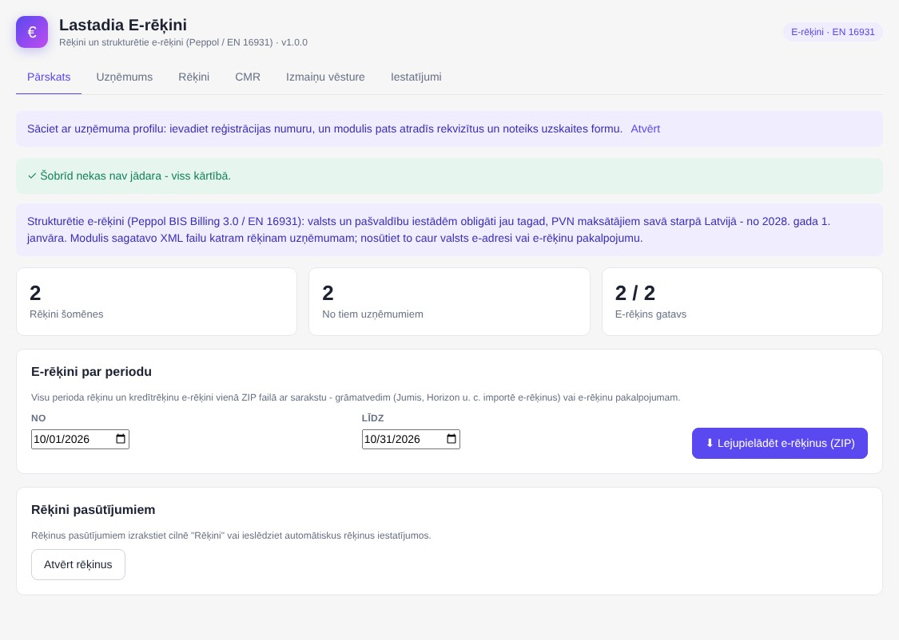
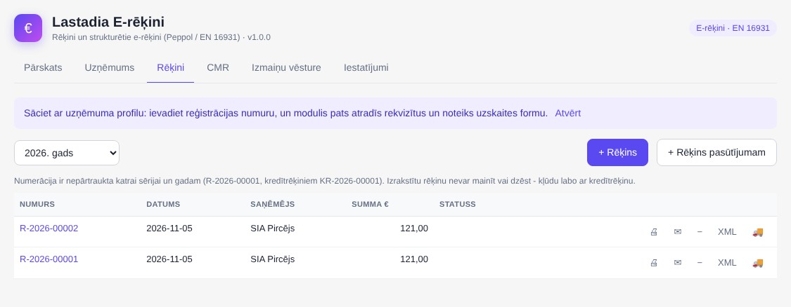
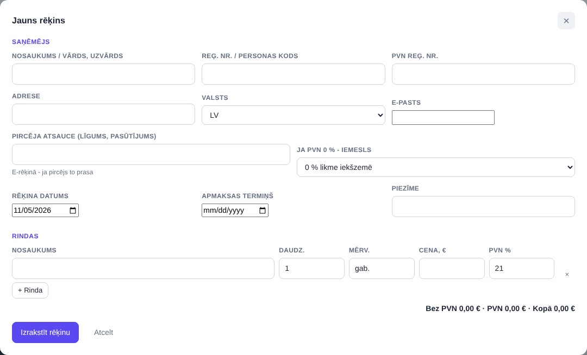
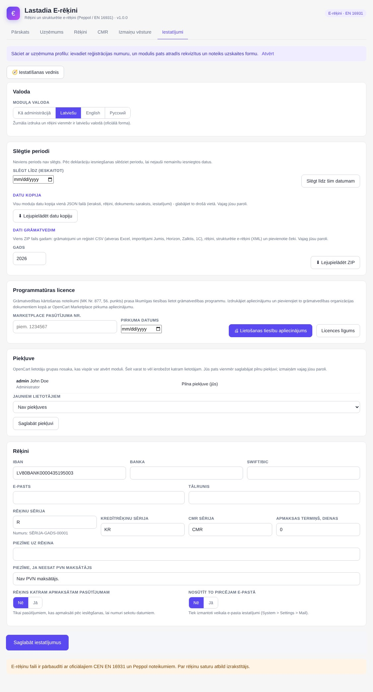
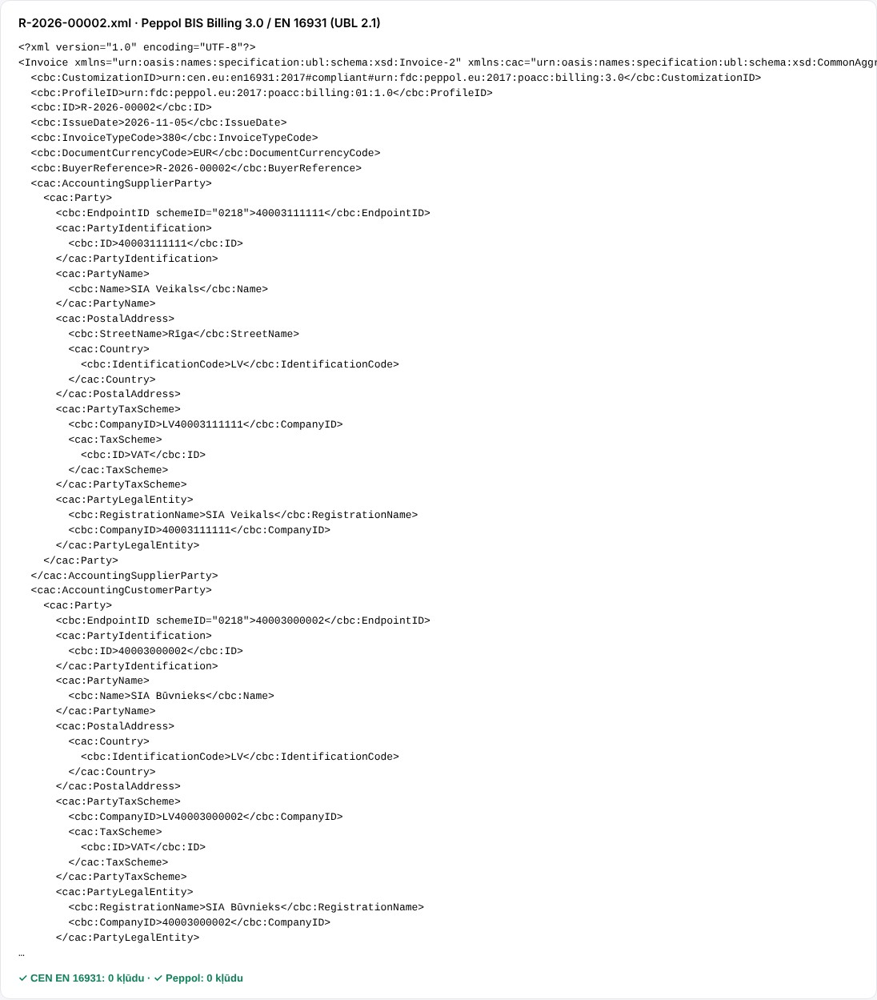

← Visi paplašinājumi Lastadia E-rēķini Rēķini un strukturētie e-rēķini (Peppol BIS Billing 3.0 / EN 16931) Latvijas OpenCart veikaliem – arī tad, ja grāmatvedību kārto grāmatvedis savā programmā. Valsts un pašvaldību iestādēm obligāti jau tagad, PVN maksātājiem savā starpā – no 2028. gada 1. janvāra.
OpenCart 3 + 4 vienā pirkumā Netiek mainīti OpenCart faili 12 mēnešu atjauninājumi un atbalsts
Ko tas dara Rēķini un kredītrēķini ar nepārtrauktu numerāciju, izdruka un PDF, nosūtīšana pircējam pa e-pastu Rēķins pasūtījumam ar pircēja uzņēmuma rekvizītiem; pēc izvēles automātiski katram apmaksātam pasūtījumam Rēķins bez pasūtījuma (pakalpojumi, B2B) ar rindām, mērvienībām un PVN likmēm; PVN 0 % iemesls: apgrieztā maksāšana, ES preces, eksports, atbrīvots Katram rēķinam uzņēmumam – XML fails Peppol BIS Billing 3.0 / EN 16931 (UBL 2.1), pārbaudīts ar oficiālajiem CEN un Peppol noteikumiem E-rēķini par periodu vienā ZIP failā ar sarakstu – grāmatvedim vai e-rēķinu pakalpojumam Uzņēmuma dati no Uzņēmumu reģistra, VID PVN maksātāju reģistra un VIES Izrakstītu rēķinu nevar mainīt vai dzēst – kļūdu labo ar kredītrēķinu; izmaiņu vēsture un piekļuve katram administratoram Failu nosūtiet caur valsts e-adresi vai e-rēķinu pakalpojumu – modulis pats nesūta Vajag arī grāmatvedību? E-rēķini jau ir iekļauti Lastadia Grāmatvedība un Lastadia Žurnāls Ekrānuzņēmumi 
Pārskats: e-rēķini šomēnes un ZIP par periodu 
Rēķini ar e-rēķina XML pogu 
Jauns rēķins ar PVN 0 % iemeslu 
Iestatījumi 
E-rēķina XML: 0 kļūdu (CEN EN 16931, Peppol)